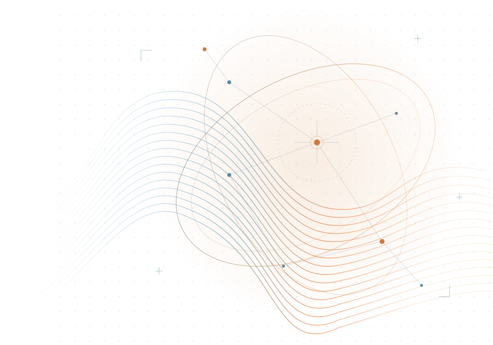

Présenter
Mettre en valeur les travaux et les contributions des doctorants.

RENCONTRE SCIENTIFIQUE · ENSA KHOURIBGA
ÉDITION 2026–2027
La recherche se rencontre.
Une journée pour présenter ses travaux, partager les idées et faire émerger de nouvelles collaborations.
BIENVENUE À LA JOURNÉE DOCTORALE PEME
La recherche avance plus loin lorsqu’elle se partage.
La Journée doctorale du laboratoire PEME réunit la communauté scientifique autour des travaux des doctorants, dans un esprit d’ouverture, de dialogue et de collaboration.
À l’ENSA Khouribga, cette rencontre offre un espace pour présenter les avancées scientifiques, confronter les approches et construire de nouvelles perspectives de recherche.
Mettre en valeur les travaux et les contributions des doctorants.
Croiser les approches et bénéficier de retours constructifs.
Créer des liens entre chercheurs, équipes et disciplines.
02 / LE DÉROULEMENT
Le programme détaillé et les horaires seront communiqués après validation par le comité d’organisation.
Accueil des participants et ouverture de la rencontre.
Communications scientifiques et échanges autour des travaux doctoraux.
Discussions, perspectives et conclusion de la journée.
03 / LES ÉCHÉANCES
Les échéances officielles seront ajoutées ici dès leur confirmation.
04 / REJOINDRE LA RENCONTRE
Deux démarches pour prendre part à cette rencontre scientifique.
Réservez votre place et retrouvez les informations utiles concernant l’événement.
Ouverture prochaineAccéder à l’inscriptionPartagez vos travaux de recherche avec la communauté scientifique.
Ouverture prochaineSoumettre un résuméLes modalités, dates limites et formats de soumission seront précisés par le comité d’organisation.
05 / INFORMATIONS PRATIQUES
École Nationale des Sciences Appliquées
Université Sultan Moulay Slimane
Khouribga, Maroc
PRÉPARER SA PARTICIPATION
La date exacte sera publiée sur ce site dès sa validation par le comité d’organisation.
Les formulaires seront accessibles dans la rubrique « Inscription & soumission » lorsque les démarches seront ouvertes. Les consignes de soumission y seront également précisées.
Le programme détaillé sera disponible dans la rubrique « Programme » après confirmation des sessions.
06 / CONTACT
Une question sur la Journée doctorale ? Contactez l’équipe organisatrice.